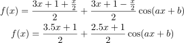
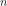

are not similar),
then.
are not similar),
then.
The Collatz Conjecture, also known as the Conjecture, is one of the unsolved problems in number theory. The setting of the problem is simple. Let’s define as
| (1) |
The conjecture states that for any n, if you apply this function enough times, it will hit 1. In this paper, I will be calling this function the step function.
The previous definition of the step function is good. However, it is expressed partially mathematically. A person might use this function to fix such an issue.
| (2) |
This function is equal to 1 when x is odd and equal to 0 when the number is even. We can use such a function to define the step function.
(3) |
This is a better formula. However, this isn’t defined for real numbers x because of . We will devise a different formula to make one that works with real numbers. The formula should oscillate back and forth between two lines, the and the . We know that a function that oscillates between and is defined as
| (4) |
Where is any function oscillating between -1 and 1. Now, again, let’s redefine the step function.
|  |
Let’s pick a to be so that the frequency of the cos wave would be 1. Then
The final function looks like this.
(5) (6) (7) |
Such a function is defined for all real numbers, not only for integers. A graph of such a function looks like the following.
The two lines here are blue and violet. They are the and the . The red curve is the step function using the formula (5). This formula will be used for the step function throughout the paper. What about defining the function using ?
As with let us set the a to . Then let us calculate b.
Then the final equation using looks like the following.
| (8) |
Another way to write the step function is the following.
| (9) |
First let’s define some basic lemmmas.
Lemma 1
This follows right from the initial definition of the Collatz Conjecture.
Lemma 2
This is also quite obvivous, such lemma comes from the function’s graph. An example of a number that saticfies the statement is . Consider the section of the step function graph from 0 to 0.2.
Looking at this graph, notice the section where . Let’s define H as the following.
Def 1
Then we can state the following.
Lemma 3
We can even state something stronger than this.
Theorem 1
When dealing with paths developed by iteratively applying the step function, a simple idea comes to mind when considering the similarities: Call two numbers alike if the path until 1 of one number is contained within the second number’s path as a prefix. A related definition I will introduce is similarity; two numbers are considered similar if one number’s path is until a number less than itself is contained within the same kind of path of the second number as a prefix. I will denote the set of all similar numbers to as , and the set of all alike numbers to as . Let us look at how to compute similar numbers; as an example, pick then one must first calculate the path til a number less than 5 (denoted as )
| (10) |
Let us now write down this path as a function by applying the exact same operations done to the numbers , but now with .
| (11) |
Then, the claim of the fundamental theorem is as follows:
| (12) |
| (13) |
| (14) |
In other words, any for which is similar to . The only way for this statement to be untrue is that we have broken the rules somewhere.
Case 1) We somewhere divide by two an odd number.
Case 2) We 3x + 1 a even number.
In the first case, whatever comes next will never hit a hole number, so it won’t be registered as similar. In the second case, an even number when dividing by two, we will return to case 1. This empowers one to calculate similar numbers and their properties efficiently.
For any the set has the following form.
| (15) |
Thus, similar numbers are distributed in a very particular way throughout the natural numbers; the difference between any two consecutive similar numbers is a power of two. This allows us to introduce a concept such as the coefficient of similarity of two natural numbers (denoted as , which is defined to be the logarithm base 2 of the constant difference between two consecutive similar numbers. Using the previous example, one can conclude that , because .
We can also make theorems about the . For example, it is
trivial to realize that if (meaning and are not similar),
then.
| (16) |
Consider and then there must be no and that the following is true.
(17) |
Meaning
| (18) |
For example, let us take numbers 3 and 5. Because we know that .
Consider Collatz Conjecture false, then a number must exist such that the path is infinite. This is a bit hard to work with; we can replace this with an analogous statement that has an infinite path until a number less than itself; in other words, never goes lower. This can be easily achieved by introducing induction over the natural numbers or simply selecting the smallest counterexample. Here, I will try to consider some examples of infinite paths and prove their non-existence to understand better the nature of the paths of the counterexample numbers.
Let us consider an infinite path, where the operations applied to the number would interchange one after another. The goal here is to consider the value of as we add more and more operations; in a sense, I will analyze the behavior of in the limit of interactions of the step-function. I will denote by the generated path after  iterations.
| SIM#(I2(x)) = {x ∈ ℕ∣3x + 1 ≡ 0 (mod 2)} | ||
| SIM#(I4(x)) = = {x ∈ ℕ∣9x + 5 ≡ 0 (mod 4)} | ||
| SIM#(I6(x)) = ... = {x ∈ ℕ∣27x + 19 ≡ 0 (mod 8)} | ||
| SIM#(I8(x)) = ... = {x ∈ ℕ∣81x + 65 ≡ 0 (mod 16)} |
It is quite simple to prove and observe the general formula for such an equation.
| (19) |
Due to  , one can simplify the equation even further.
, one can simplify the equation even further.
| (20) |
And then again, noticing the factor of , we can substitute in , thus the needed modular equality needed to be solved is the following.
| (21) |
Such equality can be easily solved; one must find multiples of , such that they are divisible by ; in other words,
| (22) |
One can see that due to the fundamental theorem of arithmetic, , thus , where is any natural number. Going backward from here, back to the original equation, we are left with an exact equation describing .
| (23) |
Let be the minimal value of the set , then as , we have , thus there exists no natural number, such that it has such infinite path.